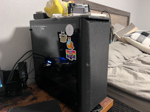
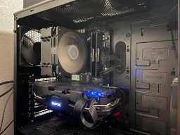
This is my main pc. It's a ryzen 5 3600 with an rx 5700xt and 16gb of ddr4 3600. It dual-boots ubuntu
and windows 10, though i rarely use windows. It's plenty fast and i have no need to upgrade.
pentium iii system
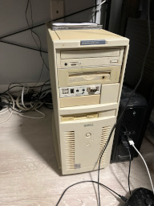
This is my windows 98 machine. It's a dell dimension xps d300 case sporting a pentum 3 700mhz with a
geforce4 mx440 (essentially a geforce2 gts) and 384mb of ram. I've got both an ess audiodrive for dos and a
soundblaster audigy for windows. It was originally a pentium 2 300mhz but i swapped the motherboard for one
from a dell dimension xps t700r.
main laptop
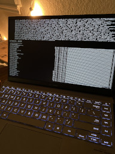
This is my main laptop. It's got a ryzen 5 5500u with integrated and nvidia mx450 graphics and 8gb of
ddr4 ram. It currently runs endeavoros and i use it for laptop things.
2009 mac pro
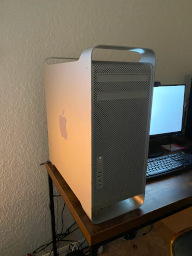
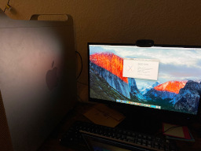
This is my 2009 mac pro. It has dual xeon x5570s for 8 total cores with a gt 120 and 16gb of ddr3
ram. It has 4 1tb hard drives in raidz1 and 1 128gb sata ssd on a pcie card. I use it as a debian nas and
server.
mac mini g4
This is my mac mini g4. It has a powerpc g4 at 1.25ghz, radeon 9200 graphics, and 1gb of ddr ram.
In the past it used an ssd with an m.2 sata to ide adapter, but currently does not have a hard drive. I've run
mac os 10.4, 10.5 sorbet leopard, and gentoo on it in the past. The superdrive is unfortunately dead.
powerbook g4
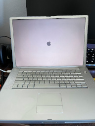
This is my powerbook g4. It has a powerpc g4 running at 1.67ghz, radeon 9700 128mb graphics, and 2gb
of ddr2 ram. It has an 80gb hard drive currently dual booting mac os 10.4 and 10.5 sorbet leopard. I use it
to play old mac games and minecraft.
thinkpad t400
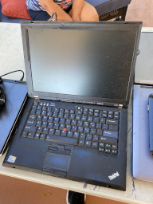
This is my thinkpad t400. It has a core 2 duo (something or other) with gm45 graphics and 8gb of
ddr3 ram. It currently runs windows vista, but has run windows 7 and manjaro in the past. I use it for windows
things.
tandy coco 2
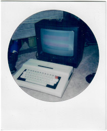
I haven't gotten a lot of work done with this machine, but I like it a lot! I've been meaning to set up
drivewire and do some code development.
mac plus
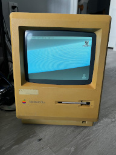
This is a mac plus. It is stock except for 4mb of ram. I got it for cheap without a keyboard or
mouse, but it does boot. Had to clean the floppy drive though. I don't use it for much without the
keyboard or mouse.
computers i no longer own
imac 2007
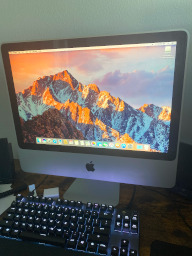
This is my 2007 (?) imac. It's got an upgraded core 2 duo of some kind and 4gb of ram. It currently
runs mac os el capitan. It's pretty beat up and i use it as an intel machine with firewire and semi modern
macos. eventually i hope to replace it with a macbook of some kind, as it's kinda bulky.
emachines small tower
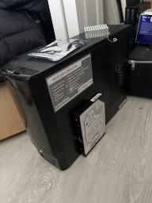
This is a small emachines tower from 2009. It's got an athlon ii x220 and 8gb of ram, with a 1tb
hard drive. It runs windows 7. It's gpu is a geforce 6150se, which is from 2004 and trash.